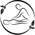

Corps Esprit has what your looking for!
As your oasis, Corps Esprit is constantly evolving to better suit your needs and make sure you get the best results possible. We our constaly upgrading our equipement and creating new classes that can interest our clients.
Our fast growing buisness is devided into two main health care services. Our Studio offers a wide range of classes, outdoor activities and relaxation sessions. We have two studios to host our classes, which give us the opportunity for longer class time and offer more classes during the day then any other studio in town. Our studios are spcious, clean and are filled with natural light, which makes for the perfect embiance to bring warmth and piece of mind to your body. Not onyl can you sign up for a variety of classes, you can also book your own studio time wheter you want to host your own classes enjoy classes with your friends or simply enojy a moment of complete serenity to yourself.
If you have been suffering from joint pains, msucle aches or any other health problems, it's time to take your life back into your own hands and start feeling good again. Our Clinic is composed of 3 rooms where our team of certified experts can help you achieve a happier and healthier lifestyle. They are constantly attending meeting and conferences to learn new and effective ways to help you get better in as little time as it can take. At our Clinis we offer massage therapy and osteopathy.
The Studio
Yoga
There are many types of Yoga around the world, and we offer almost all of them! The ultimate goal of yoga is to help you transcend the self and attain enlightenment. yoga is a way of living whose aim is a healthy mind in a healthy body. The human is a physical, mental and spiritual beign; yoga helps promote the balance of all three. Corps Esprit offers a variety of Yoga classes for woman of all ages; Hatha Yoga, Hot Yoga, Power Flow, Prenatal yoga, Yoga Therapy and many more.
The most common class is Hatha Yoga; this course is designed to tone and improve body flexibility with yoga postures, breathing techniques and relaxation.
An other exciting Yoga program we offer is for expecting mothers, mothers with babies or simply woman that are new to the motherhood and would like to get back into shape. You can intergrate in this course no matter where you are situated in your pregnancy.
Pilates
Pilates is a body conditionaing mothode based on the fusion of body and mind which results in improved posture, flexibility, strength and the transformation of the way a person's body feels, looks and performs. Pilate focuses on multiple muscle groups at the same time. In addition, there are a variety of Pilates machines. Mat exercises require a person to use their own body weight as resistance, while machines provide additional spring resistance.
Here, we offer and range of Pilates classes; Pilates for beginners, intermidiate and experts, abdo-thigh-hip, classical, basics, foundation, therapeutic, power and many more!

Tai-Chi
Tai-Chi is a series of 108 movements performed in the same way that calms the mind, strenghtens the body and stimulates the harmonious flow of chi throughout the body. The introductory course is the learning of the 108 moves with the objective of being able to participate with a group that knows the sequence well.
Mothers and Babies
The baby blues sometimes gets the best of you. At Corps Esprit, we offer you a way to get back on track and start feeling good about your body again. Being a new mom and get hectic. This is why we offer classes that you and your baby can participate in together. Cardio stroller gives you the opportunity to participate in an activity while enjoying the fresh aire of the outdoors without separating you from your newborn. Professionals assist to ensure your safety and quality of your mouvement while providing you with specific post-natal rehabilitation moves for the muscles affected by childbirth.
Outdoor Activities
Fitness by performing various muscle exercises with free weights, resistance bands, swiss ball, bosu and just the weight of the body. Cardio tone: to get in shape while having fun!
The Clinic
Massage Therapy
The benefits of massage therapy is more than a moment of relaxation. Massage helps to reduce stress, prevent disease and improve the state of health. It has many positive affects on the posture of the body, the functionning of the whole organism, on sensory and psychomotor levels and psychological and emotional levels.
In our Clinic, we offer; Swedish massage, Shiatsu massage, California message, Relaxation message, Theraputic massage, Thai massage and many more!
Osteopathy
Osteopathy is a manual health profession to diagnose and treat loss of mobility in various structures that make up the human body. Osteopathy can be for anyone from infants the the elderly, pregnant woman. It uses gestures and techniques that is best suited and most comfortable for each patient.
You can consult and Osteopath for muscle and tendon problems, scars and adhesions after surgery, pain and decreased joint mobility, degenerative and inflammatory disorders and many more things that have to do with the body.